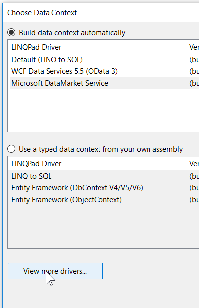
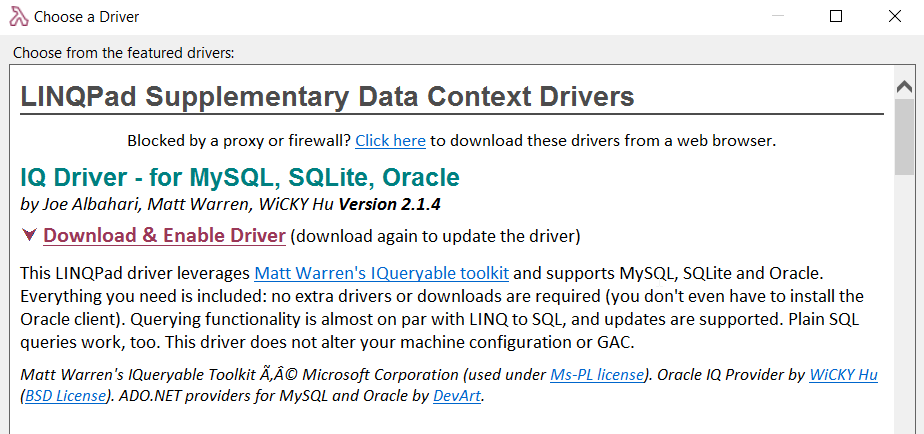
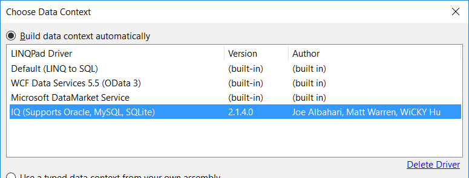
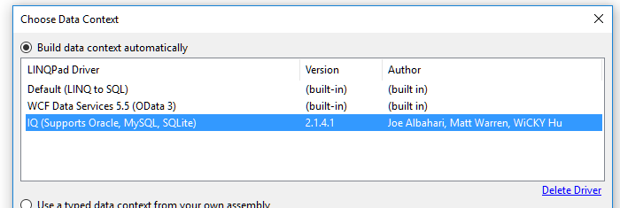

...using an IQ Connection.
Step 1, Add connection
Step 2, click view more drivers

Step 3, Find "IQ Driver - for MySQL, SQLite, Oracle"

click "Download & Enable Driver"
Now when you choose "Add Connection" you'll forever see "IQ" listed.

Pick Next.
Choose Direct (Oracle Client not Required)
(it has these limitations: http://www.devart.com/dotconnect/oracle/docs/DirectMode.html
Now here are the tricks....
Given this connection string
"Data Source=SRV1238xx1.example.com:1234/DS128x; User Id=UserUser; Password=PassPass;"
On the dialog, you would set:
Server = SRV1238xx1.example.com
User = UserUser
password = PassPass
Give it a friendly name
Then on the 'Advanced' tab Set:
Port = 1234
And in addition connection string options, type:
Service Name=DS128x
Note the space between Service and Name
Optionallly, you can set a default schema, if you know a schema that you're most interested in. (It's not mentioned in the example connection string above. Setting one will allow you to browse the schema details: list of tables, views, columns, etc.)
Hit test to test. And Bob's your Uncle.
Although this worked perfectly well at first, one day the Oracle DBA's upgraded something on the servers and suddenly my linqpad queries returned this error:
Connection Error: ORA-28040: No matching authentication protocol
The solution was to update my copy of the IQ Driver. To do this I had to remove it, and add it again.
To remove it:
Click "Add connection" as shown above, select the "IQ (Support Oracle, MySQL, SQLite)" data context, and click "Delete Driver"

Then add the driver back in, as explained above. i.e. click "View more drivers..." and select the one you're interested in.
It will now be upgraded, and your problem may be resolved.
Or it may not.
What do I know? I'm just some guy in the internet.